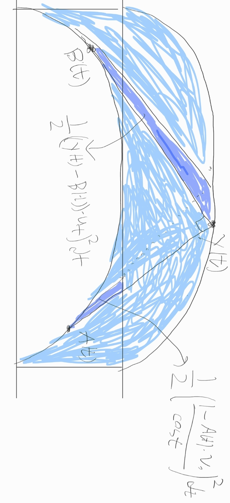

4 Concave upper bound of sofa area
In this section, we show that the corner injectivity theorem 3.1 provides us an upper bound \(\mathcal{A}_1(S)\) of the area \(\mathcal{A}(S)\) of a monotone sofa \(S\) which is concave respect to \(\mathbf{x}\). Assume in the following that the upper part of the cap \(\mathcal{C}(S)\) of monotone sofa \(S\) is strictly convex and smooth.
For any \(t \in \mathbb {R}\), define \(u_t\) as the unit vector that makes an angle of \(t\) from the \(x\)-axis. And define \(v_t = u_{t + \pi / 2}\) as the unit vector perpendicular to \(u_t\). We will use the wedge product \(\mathbf{v}_1 \times \mathbf{v}_2 \in \mathbb {R}\) of two vectors \(\mathbf{v}_1, \mathbf{v}_2\) in \(\mathbb {R}^2\) which is defined as \((x_1, y_1) \times (x_2, y_2) = x_1 y_2 - x_2 y_1\). For any \(0 \leq t \leq \pi \), let \(h(t)\) be the height function of the cap, and \(A(t)\) be the corresponding point on the tangency. That is, \(h(t) = \max _{p \in \mathcal{C}(S)} p \cdot u_t\) and \(A(t) = \arg \max _{p \in \mathcal{C}(S)} p \cdot u_t\). Then we have \(A(t) = h(t) u_t + h'(t) v_t\). The area of the cap is \(\frac{1}{2} \int _0^{\pi } A(t) \times A'(t) dt\), which simplifies to \(\frac{1}{2} \int _0^{\pi } h(t)^2 + h(t)h''(t) dt\) using the equation above and \(u_t \times v_t = -v_t \times u_t = 1\). For \(0 \leq t \leq \pi / 2\), define \(g(t) = h(t + \pi / 2)\).
Now we have a look at the area of the niche. By the injectivity theorem 3.1, it is possible to bound the area of the niche from below by the area determined by the inner corner \(\mathbf{x}\). The inner corner’s position is then \(\mathbf{x}(t) = (h(t) - 1) u_t + (g(t) - 1) v_t\). The area of the niche would then be bounded from below by \(\frac{1}{2} \int _0^{\pi / 2} \mathbf{x}(t) \times \mathbf{x}'(t)\). Keeping only the homogeneous quadratic terms, this is equal to \(\frac{1}{2} \int _0^{\pi / 2} h(t)^2+g(t)^2+h(t)g'(t)-g(t)h'(t) dt\). Finally, subtracting the area of cap by the lower bound of the niche, the upper bound of sofa area determined by the path of inner corner \(\mathbf{x}\) is equal to
modulo linear terms respect to \(h\) and \(g\). This derivation so far is from Yoav’s email.
Let \(B(t) = A(t + \pi / 2)\). Let \(\mathbf{y}(t)\) be the coordinate of the outer corner, so that \(\mathbf{y}(t) = h(t) u_t + g(t)v_t\). Then consequently we have \(B(t) = - g'(t) u_t + g(t)v_t \). I claim that the area 4.1 is equal to
modulo linear terms. It is the area of the region shaded blue in the following figure.

One needs to use \(h(\pi / 2) = 1\) to show this. The integral form shows that \(\mathcal{A}_1\) is concave, which makes it subject to convex optimization.